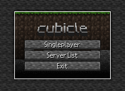

1. THE BEGINNINGS
CUBE0 was started out using the name "cubicle", there was a name before that but there are no traces of it.
I have created the textures for it when creating cubicle along side it, and I am still using it 'till this day.
Here's a sketch photo for the title screen (with added bordering).

As you can see, I was "inspired" from the beta versions of Minecraft.